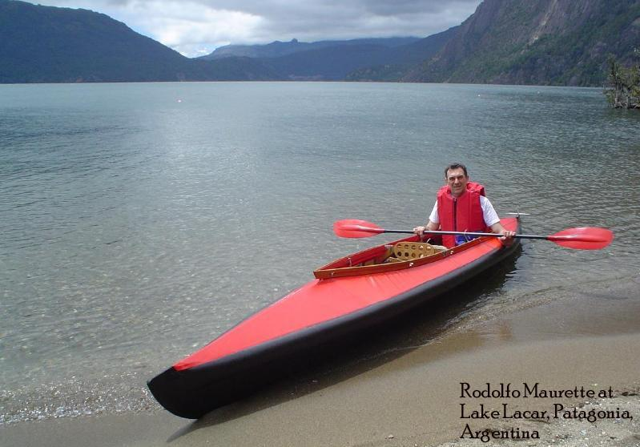

| Victoria Patagónica | Menu Previous Page Next Page |
|
 Prior to building a Sea Cruiser, Rodolfo designed and built the "Victoria Patagónica" folder. This beautiful kayak is based on photos he'd seen of various Klepper designs. Construction is of aluminum stringers, plywood cross sections, and a PVC skin. This is the only kayak in the manual that I didn't design. I've included it because it's so well designed and built. Detailed pics, drawings, instructions, and contacts for the Victoria Patagónica can found at the following LINK. Use the {Back} key to return. |
|